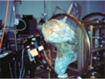
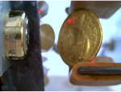
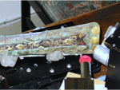
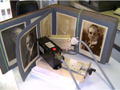
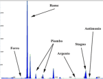
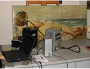
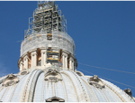
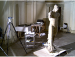

L'esperienza trentennale nel settore della diagnostica applicata ai beni culturali ha portato l’Ars Mensurae a maturare una profonda competenza
nell’analisi e nello studio di una vasta gamma di opere d’arte provenienti da tutto il mondo.
Dai materiali archeologici all’arte contemporanea, da originali di grande rilievo a copie e falsi di particolare interesse, dalle collezioni
dell’Estremo Oriente a quelle delle Americhe la nostra capacità di eseguire indagini in situ — non invasive, rapide e adattabili alle specifiche
esigenze dei clienti — ci ha resi partner affidabili per numerose istituzioni e progetti di rilievo internazionale.
Di seguito presentiamo una selezione delle collaborazioni più significative e degli interventi più rappresentativi, suddivisi per categoria di
materiali.
Alcuni dei risultati ottenuti sono stati pubblicati, previa autorizzazione o partecipazione diretta dei proprietari delle opere coinvolte.
Istituzioni nazionali ed internazionali
UNESCO (United Nations Educational, Scientific and Cultural Organization)
IAEA (International Atomic Energy Agency)
ONU (Organizzazione delle Nazioni Unite)
INFN (Istituto Nazionale di Fisica Nucleare)
CNR (Consiglio Nazionale delle Ricerche)
ICR (Istituto Centrale per il Restauro)
Procure della Repubblica italiana
Università europee e italiane tra cui Sapienza, Roma 3, Università del Salento, Università di Palermo, università di Camerino, Università della Tuscia, Università di Cassino
Musei in Europa ed Italia tra cui Louvre (Parigi), Museo d'arte antica Castello Sforzesco (Milano), Galleria Borghese (Roma), Musei Capitolini (Roma), Galleria dell'Accademia (Firenze), Museo e Real bosco di Capodimonte (Napoli), Cappella San Severo (Napoli), Palazzo Abatellis (Palermo).


Leghe Bronzee tra cui
Statua romana "Il Satiro danzante di Mazara del Vallo", Istituto Centrale del Restauro, Roma.
Statua equestre del "Colleoni" di Andrea del Verrocchio, Venezia.
"San Pietro Nero", statua bronzea, Basilica di San Pietro, Città del Vaticano.
"Monumento equestre al Duca d'Aosta" di Davide Calandra, Torino.
"Monumento funerario di Sisto IV" di Antonio del Pollaiolo, Museo del Tesoro, Citta' del Vaticano.
Globo dorato sulla cupola della Basilica San Pietro, Citta' del Vaticano.
Sattua equestre del Garibaldi, Roma
La Minerva, Sapienza, Roma.
Raccolta di bronzi preistorici della collezione San Francesco, Museo Civico, Bologna. Raccolta di
bronzi pre-protostorici, Museo Archeologico, Chieti.
Raccolta di bronzi archeologici degli scavi di Pyrgos e Sotira Kaminoudhia, Cipro.
Bronzi dell'Estremo Oriente, Museo Nazionale di Arte Orientale, Roma.
Statua bronzea "Ercole saettante" di Emile Bourdelle, Galleria Nazionale di Arte Moderna, Roma.
"Monumento a Vincenzo Vela" di Davide Calandra, Torino.


Leghe Preziose tra cui
Crocifisso in lastra d'argento sbalzato del X secolo, Pavia;
Pugnali micenei ageminati e intarsiati d'oro e d'argento, Maschera funebre di Agamennone, Museo
Archeologico di Atene, Grecia;
Paliotto di Nicola da Guardiagrele, Teramo;
"Croce di Sant'Agostino", "Croce di Guardiagrele","Croce di San Giovanni in Laterano", "Croce di
Antrodoco", "Ostensorio di Francavilla","Ostensorio di Atessa" in argento e smalti,di Nicola di
Guardiagrele, Roma;
Paliotto in argento sbalzato del Duomo di Ascoli; "Il cielo d'argento", Istituto Centrale per il Restauro
(I.C.R.), Roma;
Tesoro di San Gennaro, Napoli;
Monete della collezione dei Musei Capitolini, Roma;
Collezione Tumbaga, Museo Nazionale del Perù, Lima





Opere Mobili tra cui
Dipinti del Caravaggio Musei e chiese di Roma
Dipinti su tela di Giorgio De Chirico, Collezione della Galleria Nazionale d'Arte Moderna (G.N.A.M.) e
della Fondazione de Chirico, Roma.
Dipinti di Giacomo Balla e Giovanni Fattori, su tela, Collezione della Galleria Nazionale d'Arte Moderna
(G.N.A.M.), Roma.
Diversi dipinti del Modigliani Collezione della Galleria Nazionale d'Arte Moderna (G.N.A.M.), Roma,
Museo di Grenoble, Francia.
Dipinti del Tiziano Galleria Borghese, Roma.
"Il martirio di Santa Caterina" su tela, di Mattia Preti, La Valletta, Malta.
Dipinti su tela "Il mattino", "Le nubi", "La quiete" di A. Fontanesi, Galleria di Arte Moderna (G.A.M.),
Torino.
Dipinto su tavola, Madonna del Rosario di Sautrnino Gatti, Munda, L'Aquila.
Dipinto su tavola, Trittico Gragonetti, Antoniazzo Romano, Munda, L'Aquila.
Dipinto su tavola, Dormitio Virginis, Maestro del trittico di Beffi, Munda, L'Aquila.
"Due carrettieri di notte" di Renato Guttuso, tempera su carta, Fondazione Guttuso, Roma.
Dipinti su carta e seta dell'Estremo Oriente, Museo Nazionale d'Arte Orientale, Roma.
"Flowers", serigrafia di Andy Warhol.
"Croce di Santa Giulia" in legno policromo dalla Cattedrale di San Martino, Museo di Palazzo Guinigi,
Lucca.
"Visione del Beato Amedeo Menez", pala lignea dello PseudoBramantino, Museo d'Arte Antica di
Palazzo Barberini, Roma.
"Colazione sulle spiagge di Posillipo" su tela, di Pietro Fabris, Reggia di Caserta, Caserta. "Campo di
grano", "Deserto serale" dipinti su tela, di Mario Schifano, Roma.
"Nativita' della Vergine" tela di Antonio Gherardi, Narni.
Dipinto ligneo di Palma il Vecchio "la Sacra Conversazione", Museo Nazionale di Belgrado, Serbia.
"Pietà" su tavola di Giovanni Bellini, Museo degli Uffizi, Firenze.
Crocifisso ligneo policromo, Foiano della Chiana.
Icona "Deisis" del Museo Storico di Tirana, Albania.
Paraventi cinesi Coromandel, in lacca policroma su legno, XVIII secolo, Residenza dell'Ambasciatore
americano a Roma.
Frammenti fittili provenienti dal Santuario Heraion del Sele, Paestum.
Registri liturgici (Cantorini) del secolo XIV della Sovrintendenza Archivistica per l'Umbria, Perugia
Archivio Storico.Album fotografico per il Presidente Enrico De Nicola (1923), conservato presso
l'Archivio Storico della Presidenza della Repubblica.
Codice del 1587 Actorum Civilium in carta vergata, Archivio Storico di Ravenna.
Codice Pergameneceo dell'Archivio Capitolare di Assisi.


Opere Inamovibili tra cui
Affreschi sala Maccari e Pannini, Senato della Repubblica, Roma.
Affreschi nella Basilica di San Francesco d'Assisi ad Assisi.
Cupola di Pietro da Cortona, Chiesa Nuova, Roma.
Galleria Nova del Pannini, Villa grazioli, Grottaferrata.
La gloria di Sant'Eusebio del Mengs, Sant'Eusebio, Roma
Affreschi della Villa di Livia di eta' romana, Museo Nazionale Romano di Palazzo Massimo alle Terme
Dipinti del Trevisani, Chiesa di Santa Maria degli Angeli, Roma,
Affreschi della Cappella dell'Annunziata, Palazzo del Quirinale, Roma.
Affreschi ad Ostia Antica, Roma.
Affreschi di Ludovico Pozzoserrato della facciata della Confraternita di Santa Maria dei Battuti,
Conegliano Veneto.
Affreschi della Cappella di Antonio Cesa, Chiesa di Santo Stefano, Belluno.
Affreschi dello Scalone d'ingresso del Castello di Giulio II, Ostia.
Affreschi del Mitreo di Sutri, Sutri.
"Mosaico della vendemmia", di eta' romana, Colle Oppio, Roma.
Mosaico dell'Arco Trionfale della Basilica di San Lorenzo Fuori le Mura, Roma.
"Stanzino segreto delle Duchesse", legno policromo, Castello Estense, Ferrara.
Tabernacolo marmoreo di Donatello, Museo del Tesoro, Citta' del Vaticano.


Statuaria in marmo, legno e terracotta tra cui
"La Fanciulla di Anzio", statua marmorea di eta' romana, Museo Nazionale Romano di Palazzo
Massimo alle Terme, Roma.
"Sarcofago di Bonifacio VIII" in marmo, di Arnolfo di Cambio, Grotte Vaticane, Citta' del Vaticano.
"Cristo velato" in marmo di Giuseppe Sammartino, Cappella Sansevero, Napoli.
"Apollo di Veio" in terracotta, dal tempio etrusco di Portonaccio, Veio.
Bassorilievi e decorazioni etrusche in terracotta policroma, Museo della citta' di Cori, Cori. Statua
lignea policroma dell'"Immacolata" di Paolo Saverio di Zinno, Roma.
Statua lignea policroma della"Madonna della Luna Nera", Venezuela.
Statua lignea policroma del"Bodhisattva" indiano, Museo d'Arte Orientale, Roma.
Coro ligneo, Chiesa del Gesù, Napoli